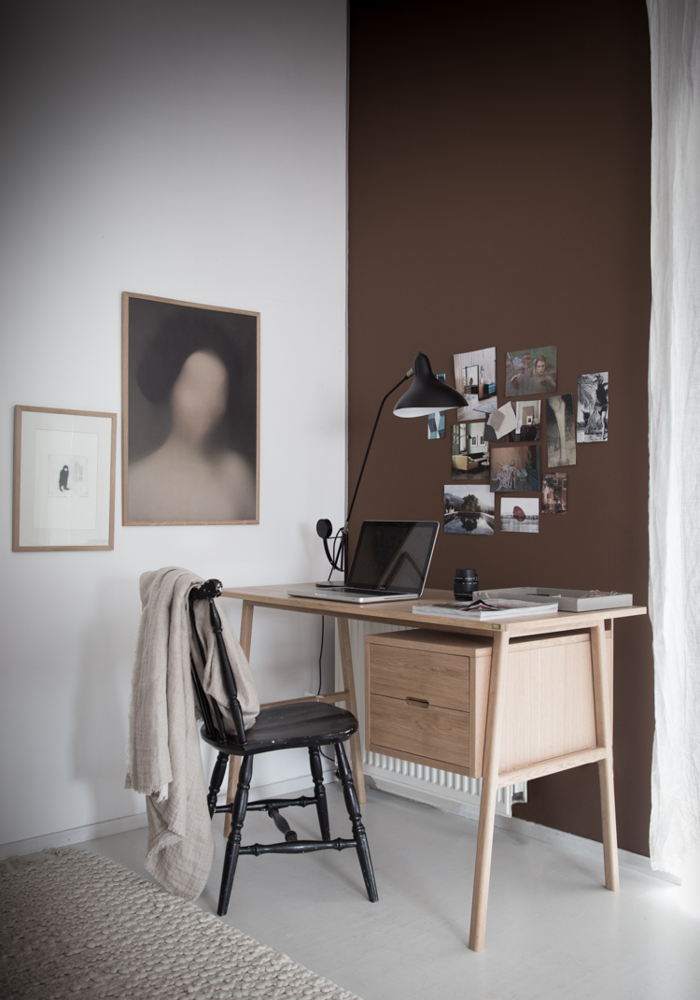

About me
I am a student at Copenhagen School of Design and Technology and I am studying Multimedia Design.
Before studying and living in Copenhagen I took a half gap year and moved from Prague, where I grew up, to London. I lived there for four months and during this time I had a chance to live outside of my comfortzone. To see what excites me and interests me. And to grow as a person.
One of the things I am interested in and in which I try to educate myself, is social media marketing. I had a chance to work on a campaign for an NGO called We care and put my knoledge into use.
For now, I still don't know what I want to do in the future as a job, however I believe, that my studies will help me to find my place.
